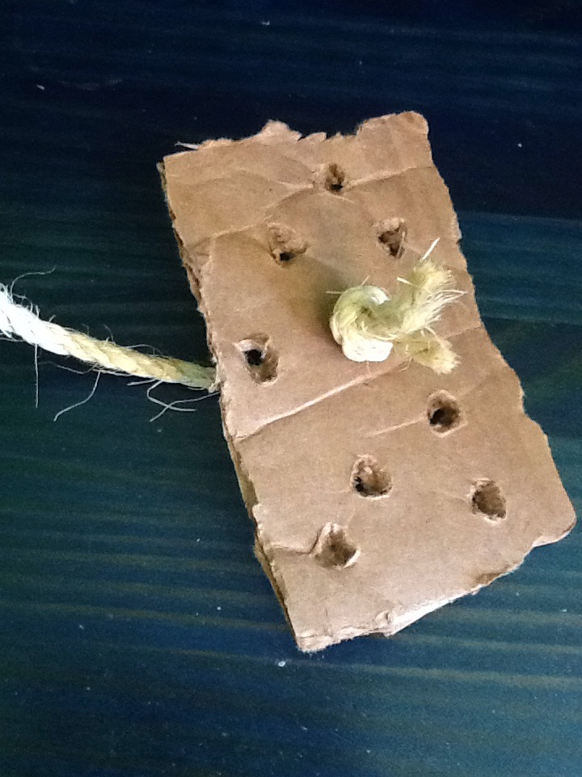
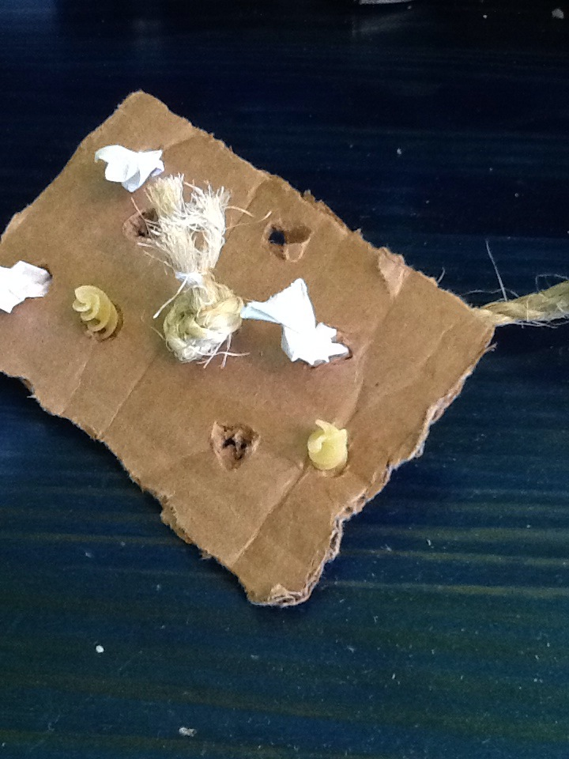

Foraging Board
MATERIALS: cardboard, paper, treats, scissors
1. Cut a rectangle about 3" wide x 5" high. You can change
this size depending on how big your bird is. Cut holes all
over the board, about an inch apart. Put one hole in the center.

2. Cut a piece of rope about 8" long. Tie a knot on one end,
and string the piece of cardboard onto the rope using the
middle hole.

3. Wedge small toys and treats into the other holes in
the board. You cna use pieces of paper, bits of rope, small
treats, or any other fun thing for your parrot to pull out.
